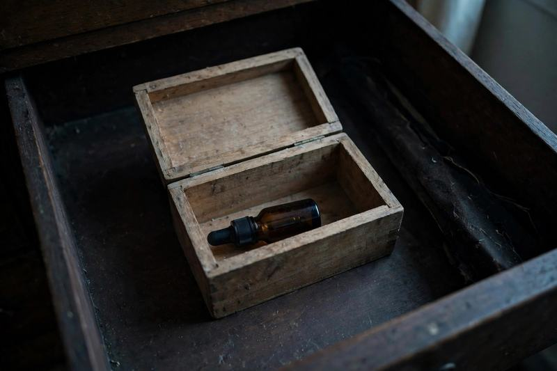

阳光和强光会让精油的香气成分氧化、变质，颜色变深、香味变酸。精油瓶通常是深色玻璃，就是为了避光。
平时把精油放在柜子、抽屉里，不要放在窗台、桌面上晒太阳。深色瓶也不是万能的，避光存放才是根本。
精油接触空气会氧化，香味越来越淡，最后变味。每次用完立刻盖紧瓶盖，不要长时间敞口放着。
滴管用完要插回去，瓶口擦干净再盖。瓶口残留的精油氧化后会发黏，影响密封。
精油怕热：高温会让香气成分挥发、变质。不要放在暖气、灶台、车里。室温存放就可以，15 到 25 度比较合适。
精油也怕冷：温度太低会凝固、分层。不要放冰箱冷藏室，冷冻更不行。室温、阴凉、稳定，是比较合适的环境。
开封后的精油，接触空气的次数越多，氧化越快。建议开封后尽快用完，不要囤着不用。
如果一次买得多，可以分装成小瓶：大瓶密封存着，小瓶日常用，减少大瓶开盖的次数。分装的瓶子要干净、干燥、避光。
精油瓶通常是深色玻璃：避光、不和精油起反应。不要把精油倒进塑料瓶，塑料会和精油起反应，香味变质。
滴管瓶用起来方便，但滴管每次都会带进空气。用完立刻盖紧，减少开盖次数。如果瓶子破了，尽快换干净的深色玻璃瓶分装。
闻一闻：香味变酸、发闷、带刺激味，可能是氧化变质了。看一看：颜色明显变深、变浑浊，也可能是变质。
变质的精油不要继续用在皮肤上。变质是不可逆的，保存得当才能避免。
| 保存要点 | 怎么做 | 不能怎么做 |
|---|---|---|
| 避光 | 深色瓶 + 柜子、抽屉 | 放窗台、桌面晒太阳 |
| 密封 | 用完立刻盖紧，瓶口擦干净 | 长时间敞口放着 |
| 恒温 | 室温 15–25 度，阴凉稳定 | 放暖气、灶台、车里、冰箱 |
| 开封 | 尽快用完，多了分装小瓶 | 囤着不用，反复开盖 |